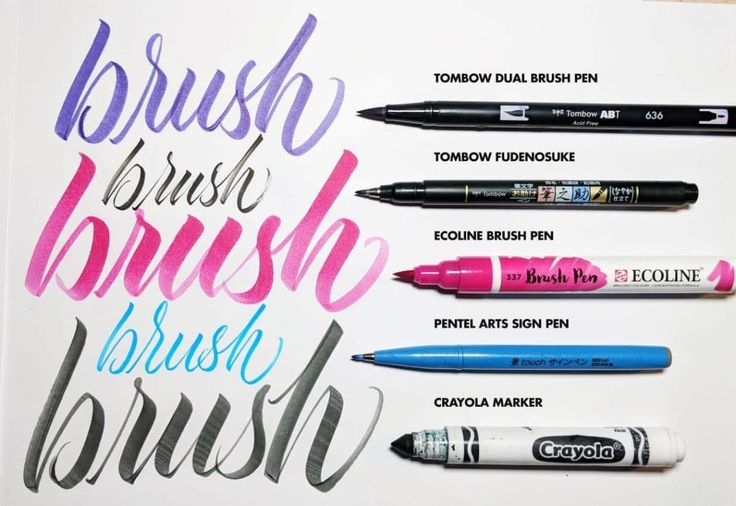

calligraphy world images


tips: Embrace the Flow Let your hand move gracefully, allowing the ink to dance on the paper.
tips: Practice Patience Take your time; each stroke is a step towards mastery.
tips: Seek Inspiration Look at nature, art, and history to find beauty in every letter.
tips: Stay Mindful Focus on the present moment; let your thoughts flow with the ink.
"Unlock your creativity with the timeless art of calligraphy. Whether you're a beginner or an experienced artist, our resources will guide you through the elegant strokes and techniques that define this beautiful craft."